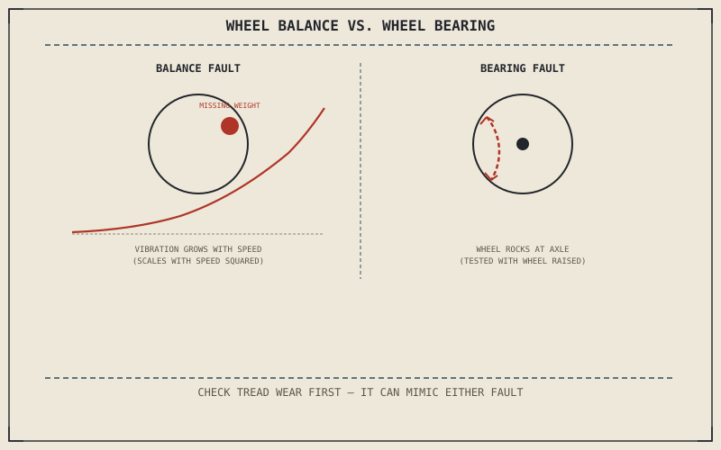

Chapter 6.7 already taught how to read a tyre's wear pattern as a record of pressure, cornering style, and alignment, all written directly into the rubber where a rider can see it. This chapter covers what that visual record can't show: faults you feel through the bars or pegs rather than see on the tread, sitting in the wheel itself rather than the tyre bolted to it.
Chapter 11.7 closed with the tyre and wheel as the last part of the chassis this part hadn't diagnosed yet. This chapter covers it.
A Vibration That Builds With Speed: Wheel Balance
A wheel isn't perfectly uniform in mass around its circumference, and small balance weights correct for that imbalance when the wheel is built or a tyre is fitted. A weight that's fallen off, or a wheel that was never balanced correctly, produces a vibration that gets noticeably worse as speed increases and eases off again as speed drops — a direct consequence of an off-center mass spinning faster, since the resulting force scales with the square of rotational speed. This is a smooth, speed-tied vibration, distinct from anything Chapter 6.7's wear patterns produce, which show up as a rougher, more textured feel tied to the road surface rather than to speed alone.
Play at the Axle: A Wheel Bearing Fault
With the wheel off the ground and the bike properly supported, grasping it at the top and bottom and rocking it side to side — not spinning it — tests for a fault Chapter 6.7's tread inspection can't reveal at all: worn wheel bearings. Any perceptible rocking or clunking at the axle, with the tyre and rim themselves showing no damage, points to bearing wear rather than anything in the tyre. Left unaddressed, worn bearings can eventually let the wheel move enough to affect the wheel balance described above, but the two faults start out completely independent and the rocking test isolates bearing play specifically.
A vibration that builds smoothly with speed is a balance problem; a wheel that rocks perceptibly at the axle when pushed side to side, with the tyre and rim undamaged, is a bearing problem — Chapter 6.7's tread inspection reveals neither one.

A diagram contrasting a wheel balance fault, shown as vibration increasing smoothly with speed from an off-center mass, against a wheel bearing fault, shown as detectable side-to-side rocking at the axle with the wheel off the ground.
Separating a Wheel Fault From a Tyre Wear Fault
Following Chapter 11.1's method, a vibration complaint should send a rider back to Chapter 6.7's wear inspection first, since it's the faster, cheaper check: cupping, flat-spotting, or the uneven wear patterns Chapter 6.7 described as an alignment story can all produce vibration that looks identical to a balance problem from the saddle. Only once that visual inspection comes back clean does the speed-dependence test for balance, or the rocking test for bearing play, become the next step — confirming the fault sits in the wheel itself rather than in the tyre's wear pattern before assuming a rebalance or bearing replacement is actually needed.
A Common Misconception, Cleared Up Early
It's a common assumption that any vibration felt through the bars at speed means "the tyres need balancing," reaching for that explanation before checking anything else. Chapter 6.7 already showed that uneven tyre wear alone can produce a very similar feeling, and this chapter has now added wheel bearing play as a third, entirely different possible cause. Balancing a wheel that was never actually out of balance wastes the effort and leaves the real cause — worn tread or a loose bearing — completely unaddressed.
Where This Leads
This chapter isolated vibration and play specific to the wheel and tyre assembly. Chapter 11.9 turns to unusual noises and vibration more broadly, covering sources this part hasn't already traced to a single system.
Key Concepts to Remember
- A vibration that builds smoothly with speed points to a wheel balance fault, from an off-center mass whose effect scales with the square of rotational speed.
- Rocking a raised wheel side to side at the axle tests for bearing play, a fault the tread itself shows no sign of.
- Uneven tyre wear can mimic a balance problem, which is why Chapter 6.7's wear inspection should be checked before assuming the wheel itself is at fault.
Cross-References
| ← Ch. 6.7 | Established reading tyre wear patterns as diagnostic information; this chapter covers the wheel-side faults that wear-reading alone can't reveal. |
| ← Ch. 11.1 | Established choosing the faster, cheaper test first; this chapter applies that by checking tyre wear before testing for balance or bearing faults. |
| → Ch. 11.9 | Covers diagnosing unusual noises and vibration more broadly, beyond sources already traced to the wheel and tyre. |